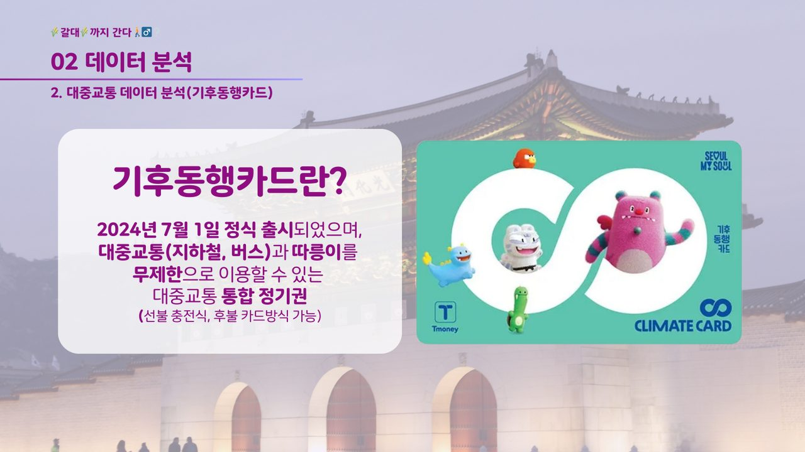

왜 이 프로젝트였나
코로나19 이후 증가한 여행 수요와 AI 기반 여행 서비스의 변화에 대응하고자 했습니다. 기존 여행 앱들이 '관광지 간 이동 수단 및 거리 정보'를 충분히 제공하지 못해 사용자가 불편을 겪는 상황을 포착했습니다.
목적 — 수도권 대중교통 데이터를 분석해 최적의 여행 경로를 제안하는 AI 맞춤형 여행 서비스를 기획. 실제 이동 데이터를 반영한 추천 로직으로 신뢰도와 만족도를 동시에 높인다.
프로젝트를 리딩하고, 데이터를 파고들다
- 프로젝트 리딩(PM) — 전체 방향 설정과 목표 수립 주도
- 데이터 수집·전처리 — App_store_scraper·google_play_scraper로 여행 앱 리뷰 8,321건 수집, 약 1,580만 건 전처리
- 데이터 분석·시각화 — Pandas·Matplotlib로 대중교통 이용량 분석, KoNLPy(Okt) 형태소 분석으로 유저 Pain Point 도출
- 일정·문서 관리 — Notion·Discord로 팀 일정 관리, 최종 발표 PPT·시각화 자료 제작
- 비즈니스 모델 기획 — 기후동행카드·서울페이(지역 화폐) 결제망 연계 플랫폼 확장 전략 수립

주제 선정부터 서비스 기획까지
- 주제 선정'폐지 줍는 노인 복지' 주제에서 데이터 수집 용이성을 고려해 '서울시 대중교통 기반 데이터 분석'으로 변경
- 데이터 수집한국관광공사·서울 열린데이터광장(API)·구글 플레이/앱스토어·유튜브 뉴스 댓글에서 확보
- 전처리 · 시각화평점 기반 긍/부정 분류, 특수문자 제거, 워드클라우드·네트워크 분석 시각화
- 데이터 분석AI 여행 앱·티머니GO 리뷰 분석 → 이동 수단 정보 부족, 결제 불편 등 인사이트 도출
- 서비스 기획BERT 키워드 추출, LSTM 혼잡도 예측, YOLO 실시간 명소 혼잡도 지수 등 포함 서비스 설계
약 1,580만 건의 데이터
| 데이터 | 규모 |
|---|---|
| 서울시 버스 노선별 승하차 | 14,475,523건 |
| 서울시 지하철 호선별 승하차 | 1,312,118건 |
| 앱 리뷰 (플레이 5,974 · 앱스토어 2,347) | 8,321건 |
| 유튜브 댓글 (423개 영상) | 1,488건 |
이 중 약 2,000여 개의 핵심 리뷰를 텍스트 마이닝 기법으로 정밀 분석해 핵심 과제를 도출했습니다.
데이터 분석 스택
언어 · 분석
데이터 수집
협업 · 디자인
발표자료 미리보기
요구분석(TNA)으로 잇는 역량
대규모 데이터에서 사용자의 Pain Point를 추출한 방법론은 교육 요구분석(Training Needs Analysis)과 동일한 접근법입니다. 단순 길찾기를 넘어 지역 상권 핀테크 유입 모델까지 확장한 '플랫폼 비즈니스 확장안 모형'을 수립하며, 데이터에서 학습자·사용자 니즈를 도출하고 논리적 구조로 기획하는 역량을 입증했습니다.